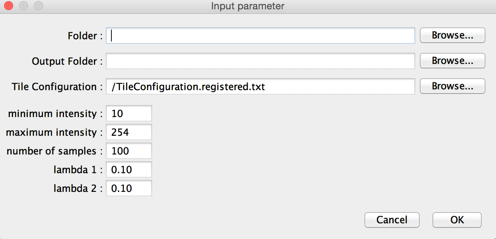

Mosaic Preprocessing Pipeline
View the Project on GitHub CBlasse/premosa
PreMosa is a pipeline designed to preprocess 3D image mosaics of one or several time points fully automatically and without any interaction. In case further customization is needed, the individual programs are also provided.
A data example can be downloaded here.The pipeline automatically performs all processing tasks independently whether the methods are provided as C++ programs or Fiji plugins. To run PreMosa, one needs to use the following command:
./PreMosa parameter.xml
The xml file contains all required and optional parameter:
| Required parameter | Description |
| <folderNameExpression> | Template of the subfolders names: {iii} encodes the time point |
| <fileNameExpression> | Template of the input images: {iii} encodes the tile number, TIME the time |
| <tStart> | First time point |
| <tEnd> | Last time point |
| <fiji> | Path to the Fiji application including the option to use Java 8 (To activate Java 8 look here) |
| <scriptLocation> | Path to the Fiji scripts required for PreMosa |
| <tileNumber> | Number of tiles |
| <gridSizeX> | Number of tiles in X direction |
| <gridSizeY> | Number of tiles in Y direction |
| <firstIndex> | Index of the first tile |
| <outputFolder> | Output folder |
| Optional parameter | Description |
| <verbose> | Activation/Deactivation of printing of preprocessing statuses |
| <intermediateFileDeletion> | Activation/Deactivation of deletion of all files created during the preprocessing |
| <radius> | Grid size (Surface Extraction) |
| <distance> | Distance parameter (Surface Extraction) |
| <threshold> | Number of bright pixels (Surface Extraction) |
| <printHeightMap> | Activation/Deactivation of export of the height map (Surface Extraction) |
| <overlap> | Percentage of overlap of the mosaic tiles (Stitching) |
| <masterTileConfig> | File with fixed stitching coordinates (Stitching) |
| <flatField> | Path to a precomputed flat field image (Flat field correction) |
| <minIntensity> | Minimum intensity accepted for the sampled pixel pairs (Contrast adjustment) |
| <maxIntensity> | Maximum intensity accepted for the sampled pixel pairs (Contrast adjustment) |
| <numberOfPixelPairs> | Number of sampled pixel pairs (Contrast adjustment) |
| <lambda1> | Penalties for the integrated regularizer (Contrast adjustment) |
| <lambda2> | Penalties for the integrated regularizer (Contrast adjustment) |
The provided 2D projection extracts one (or several) surface(s) within the 3D image volume and projects it onto a 2D image.
./SurfaceExtraction [-r <int>] [-d <int>] [-l <int>] [-t <int>] [-hmd] [-hmr] [-mi] -in inputImage.tifOptional parameters are indicated with square brackets. If they are not be considered or default values are used, then one simply ignores them in the command.
| Required parameter | Description |
| inputImage.tif | 3D input image (8-bit/16-bit) |
| outputImage.tif | 2D output image |
| Optional parameter | Description |
| -r <int> | Initial grid size (default: -r 20) |
| -d <int> | Distance parameter, defines the size of the substacks of the second selection (default: -d 2) |
| -l <int> | Number of signal layers present in the volume (default: -l 1) |
| -t <int> | Indication of the number of bright pixels (default: -t 50) |
| -hmd | Activation/Deactivation of exporting the down-sampled height map |
| -hmr | Activation/Deactivation of exporting the height map |
| -mi | Activation/Deactivation of a projection that projects the maximal intensities of the detected layer and its neighboring ones |
For multi-channel image volumes, there is the possibility of using a computed heigh map to project a spatially close surface. This extension is especially useful, when a surface is challenging or feature sparse signals.
| Required parameter | Description |
| inputImage.tif | 3D input image (8-bit/16-bit) |
| heightMap.tif | Given height map (32-bit) |
| outputImage.tif | 2D output image |
| Optional parameter | Description |
| -r <int> | Initial grid size (default: -r 20) |
| -d1 <int> | Offset parameter, defines the minimal offset of the target surface to the given height map. The offset parameter d1 needs to be smaller than d2. (default: -d2 0) |
| -d2 <int> | Offset parameter, defines the maximal offset of the target surface to the given height map. The offset parameter d1 needs to be smaller than d2. (default: -d2 0) |
| -l <int> | Number of signal layers present in the volume (default: -l 1) |
| -t <int> | Indication of the number of bright pixels (default: -t 50) |
| -hmd | Activation/Deactivation of exporting the down-sampled height map |
| -hmr | Activation/Deactivation of exporting the height map |
| -mi | Activation/Deactivation of a projection that projects the maximal intensities of the detected layer and its neighboring ones |
The flat field correction removes uneven illumination in 2D images (8-bit, 16-bit) using a flat field with was either provided as an input or generated from the input image. The usage is the following:
./FlatFieldCorrection -in inputImage.tif [-ff flatFieldImage.tif] -out outputImage.tif
Whereas the input and output image (-in, -out) are required parameters, the flat field image (-ff) can be optionally specified.
To stitch the image mosaic, we apply the Fiji plugin Grid Stitching, which allows one to merge the tiles using the information about the layout or a predefined coordinates for each tile.
To adjust the contrast and brightness of individual tiles in a mosaic, we provide a Fiji plugin. The .jar file can be found in the FijiScripts folder of our repository. Alternatively, one can also compile the code from the MosaicContrastAdjustment plugin.

This plugin requires the following parameter:
| Parameter | Description |
| Folder | Folder with all image tiles (slash at the end of the path is required) |
| Output Folder | Folder for all corrected images (slash at the end of the path is required) |
| Tile Configuration | File with the position of each image tile, generated using the Grid Stitching plugin |
| Minimum / Maximum intensity | Definition of the intensity range accepted for the sampled pixel pairs |
| Number of samples | Number of sampled pixel pairs |
| Lambda 1 / Lambda 2 | Penalties for the integrated regularizer (The higher, the bigger the possible divergence from the original images) |